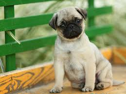

| Nombre | Raza | Años | Información de adopción | Descripción | Estado | Imagen del Gato |
|---|---|---|---|---|---|---|
| Segunda | Toyger | 8 años | No se sabe pero entró a mi ventana cuando tenía 10 años | Era flaquita, chiquita con rayas de colores como el café, gris, negro, beige, tenía 3 líneas en la cabeza en forma del logo de Adidas, tenía puntitos en la panza como si fuera leopardo y era muy esquiva | Fallecida | |
| Rafael | Bombay | 3 años | El año pasado a finales del mes de Abril | El es pequeño con el pelaje de color negro con café oscuro, tiene ojos amarillos y es bastante amoroso, su color de piel también es negro, también es tímido cuando ve a gente que no conoce. | Vivo | |
| Milu | Toyger | 3 años | El año pasado a finales del mes de Abril (es hermana de Rafael) | Ella es pequeña pero gordita, tiene el mismo pelaje que la gata Segunda, lo único que cambia es que ella tiene las líneas más definidas y es muy cariñosa. | Viva | |
| Mono | Gato Naranja | 10 años | Lo tenía desde que tenía 7 años | Era un gato muy hiperactivo, peleaba mucho y salía mucho de la casa, era demasiado cariñoso y muy acuerpado, la última vez que lo vi estaba gordito y viejo pero su color naranja llamativo jamás se le perdió. | Fallecido | |
| Nombre | Raza | Años | Información de adopción | Descripción | Estado | Imagen del Perro |
|---|---|---|---|---|---|---|
| Lupe | PUG | 4 años | La adoptamos recién nacida cuando tenía como 17 años | Es una perrita demasiado celosa, es mascota de mi hermano mayor, usualmente se fatiga demasiado y más cuando sale de casa. | Viva | |
| Kira | PUG | 2 años | La adoptamos de un familiar que la tenía en malas condiciones, fue a principios de este año | Es una perrita muy juiciosa y amable aunque un poco traicionera. Ella es también un poco territorial y muerde sin avisar. | Viva |  |
| Tipo | De que trata |
|---|---|
| Valorant | Trata de desplantar una bomba llamada spike que en un cierto tiempo hace que todos mueran, se conforma con un equipo de 5 jugadores con diferentes habilidades y personajes |
| Tipo | De que trata | ||
|---|---|---|---|
| Roblox | Es un juego que contiene minijuegos de todo tipo de clase, tiene de vestir, de mascotas, de violencia, etc, es jugado por todo publico y es uno de los juegos más populares actualmente. |
| Nombres | Fecha | Apodos | Estado |
|---|---|---|---|
| Jann Villalba | Lo conozco desde el colegio cuando estabamos en Noveno | El come todo | Soltero y depresivo adicto al codigo y a las viejas |
| Nombre | Modelo | Precio | color |
|---|---|---|---|
| Iphone 13 | Modelo intermedio | 1´400.000 | rosado |
| Nombre | Modelo | Precio | color |
|---|---|---|---|
| Samsung A06s | Modelo Viejo | 400.000 | negro |
| Nombre | Precio | sabor |
|---|---|---|
| Chocolatina | 5000 | Chocolate |
| Nombre | Modelo | Precio | color |
|---|---|---|---|
| GUCCI CAMISA | Modelo Viejo | 400.000.000 | negro |
| GUCCI PANTALON | Modelo NEW | 210.000.000.000 | negro azulado |
| Nombre | Que es |
|---|---|
| Los juegos | De violencia ejemplo valorant |